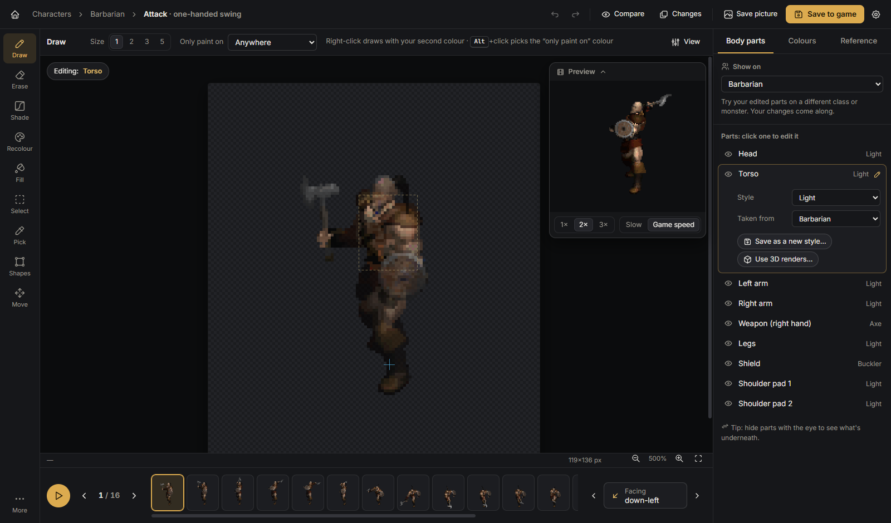

An editor for Diablo II / Project Diablo 2 graphics that reads straight from the game's MPQ archives. You can edit character, monster and item sprites pixel by pixel in the game palettes, turn 3D models into animated sprites, and cut 3D scenes from Blender or 3ds Max into DT1 map tiles and a DS1 map piece. Everything saves back out in the game's own formats, and AI assistants can drive it over MCP while you watch.

These are captured from the real app running against a Diablo II + ProjectD2 install. Click any image to see it full size.
A1 1HS), with a live preview.pd2monchars.mpq._floor, _walls and _roof DT1s plus a .ds1. The cliff faces are lower-wall tiles (orientations 16/17), drawn before the floor as the game does.Every codec is pure TypeScript and was checked against the game's own files before any UI used it. The image below is the Act 1 Cathedral courtyard, rendered from its real DS1 and DT1s by the app's own decoders and placement code. The same code draws the Tile Maker's previews.
act1\court\cat_court.ds1 rendered from 239 tiles with 0 missing references.| Check against game data | Result |
|---|---|
| DC6 item graphics, decode → encode → decode | 648 / 648 pixel-identical |
| COF files, parse and rewrite | 4,431 / 4,431 byte-identical |
| DCC animations (sampled), decode → encode → decode | 251 / 251 pixel-identical |
| DT1 tile sets (v7), decode and re-encode | 372 / 372 (221 byte-exact) |
| DS1 map presets, decode and re-encode | 2,593 / 2,593 (2,541 byte-exact) |
| Tile Maker: synthetic scene → DT1 + DS1 → re-rendered | 208,566 / 208,566 px |
| MCP server: protocol, tools, origin check and stdio bridge against the running app | 13 / 13 checks |
| DCC growth edit keeps untouched art lossless (cell-grid anchoring) | 0 px changed |
DT1 re-encodes that aren't byte-exact are still pixel-identical; they just use equivalent run choices. The 52 DS1s that
aren't byte-exact are older-version maps that differ by a few bytes; the Tile Maker writes v18, which is exact.
Excluded: a 72-byte COF stub that is corrupt in vanilla D2 (amblxbow.cof) and 6 legacy v4 DT1 leftovers the game doesn't use.
Run the checks with npm test.
Electron app with a React + TypeScript UI. File formats live in a dependency-free core that also runs under Node for the tests.
The old way was to render a scene and cut the walls into tiles by hand. This does the cutting automatically.
(X, Y, Z) maps to pixels as ((X−Z)·80, (X+Z)·40 − Y·98). A float render target also records each wall pixel's world position and which way its surface faces.0x07), stored in the same row order the game's tiles use.New in 1.1: the app can serve the Model Context Protocol, so an assistant such as Claude can work in the open app while you watch. Every change goes through the same code as the UI: it shows up live, is one undo step, and exports like a hand edit. Tool results include pictures (the frame, a sheet, or the map drawn with the game's rules), so the assistant can check its own work.
tiles_add_block. Parts below the ground became lower walls automatically.search_sprites, open_animation, open_item, set_layer (body part, style, new style code)view_frame, view_sheet, read_pixels, palette (nearest colours, shading ramps)recolor_material, replace_color, hsv_shift, draw_pixels, draw_shape, outline, import_imagetransfer_edits carries one frame's edit through the animation; undo / redo; export_pd2, export_imagetiles_add_block (box, cylinder, cone, sphere, ramp in tile units) or tiles_import_modeltiles_list_parts, tiles_set_role, tiles_settings, tiles_cleartiles_split returns tile counts and the map as the game draws it; tiles_save writes the DT1s and DS1127.0.0.1:41730/mcp; requests from web pages (other origins or hosts) are refusedget_state, go_to_screen and screenshot_appPlease look closely at these.
-direct -txt) and in ds1-studio.
The Windows installer (PD2-Sprite-Studio-Setup-1.1.0.exe, about 95 MB, unsigned) installs per-user with Start menu
and desktop shortcuts. On first run it looks for the game in C:\Program Files\Diablo II and its
ProjectD2 folder; other locations can be set in Settings. It never modifies the game install:
exports go to a separate folder with the game's own data\global\… layout.
The source and the installer are available from the author on request.
# from the source folder (Node 20+) npm install npm run dev # run with hot reload npm test # format round-trips against your game files node scripts/testMcp.cjs # MCP server end to end (after npm run build) npm run dist # build the Windows installer → release/ npx tsx scripts/webdev.ts # UI in a browser on :5198
The format docs and tools this builds on.